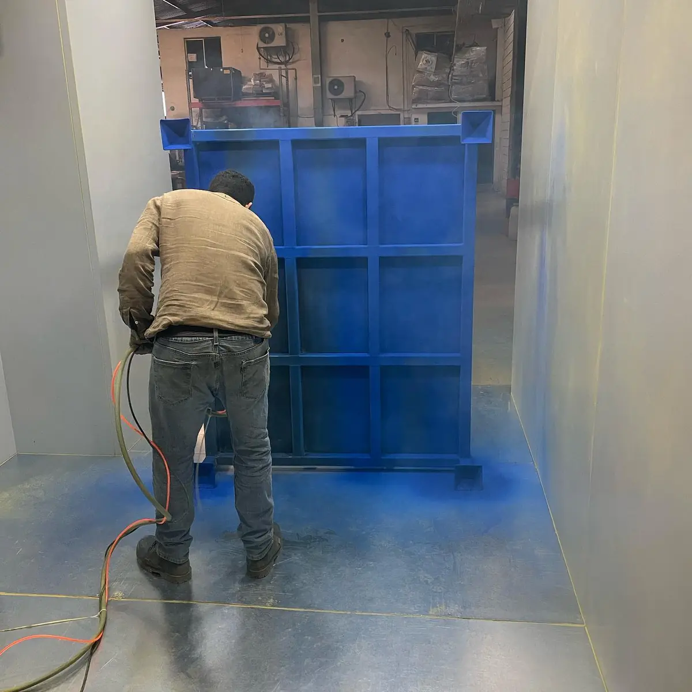

Si buscas pintura aerostática, la respuesta honesta es que no existe un proceso estándar con ese nombre. Casi siempre se refiere a la pintura electrostática, el recubrimiento en polvo que se aplica con carga eléctrica y se hornea, o a la pintura líquida aplicada con pistola de aire.
Con hidrostática, electrolítica, electromagnética y electrosoldada pasa algo parecido: son nombres que se parecen y que mezclan procesos distintos.
En esta guía te explicamos qué significa cada uno, cuáles son procesos reales y cómo saber qué necesitas para tus piezas. En Steel Paint somos maquiladores de pintura electrostática en polvo en Santa Catarina, Nuevo León, y queremos que llegues a tu cotización con los términos claros.
¿Qué es la pintura aerostática y es lo mismo que la electrostática?
La pintura aerostática no es un sistema de recubrimiento reconocido en la industria. El nombre mezcla "aero" (aire) con "estática" (electricidad estática), y de ahí salen dos significados posibles:
- Electrostática mal escrita o mal recordada: es el caso más frecuente. Quien busca pintura aerostática suele querer el acabado en polvo de gabinetes, estanterías y autopartes. Si es tu caso, el resto de la guía te sirve tal cual.
- Aplicación con pistola de aire: se confunde con la pintura aerográfica o neumática, donde una pintura líquida se atomiza con aire comprimido. El acabado se forma al evaporarse el solvente o el agua, no al curar un polvo en horno. Para comparar ambos, revisa nuestra guía de pintura en polvo vs pintura líquida.
Si ves "aerostática" en una cotización, no lo tomes como un proceso definido: pide que te aclaren qué material se aplica y cómo.
Pintura electrostática: el proceso al que casi siempre se refieren
La pintura electrostática es un polvo seco de resina y pigmentos que se carga eléctricamente al salir de la pistola y es atraído por una pieza metálica conectada a tierra. Después se funde y cura en horno hasta formar una película continua.
En la industria se le llama también pintura en polvo o powder coating, y es común verla escrita como pintura electroestática o electrostatica sin acento. Es el proceso que realizamos en Steel Paint.
Para profundizar, el Powder Coating Institute, la asociación del sector, publica material técnico sobre pintura en polvo. Si quieres entender el funcionamiento completo, empieza por nuestra guía sobre qué es la pintura electrostática y cómo funciona.
Y para definir el material, te ayudan las guías de tipos de pintura en polvo y de tipos de acabados en pintura electrostática.
Pintura hidrostática: dónde sí existe el término
"Hidrostático" es un término real, pero pertenece a otro mundo. No describe una pintura para metal. Lo vas a encontrar en dos contextos:
- Pruebas hidrostáticas: son pruebas de presión en las que se llena un tanque, un recipiente o una tubería con agua para verificar que resiste y que no tiene fugas. Es una prueba de la pieza, no un recubrimiento. Después puede ir a pintura, pero son etapas separadas.
- Hidrografía: también llamada impresión hidrográfica o transferencia sobre agua. Una película con un diseño flota en agua y se transfiere a la pieza al sumergirla. Se usa en acabados decorativos que imitan madera, fibra de carbono o camuflaje, y es una técnica distinta de la pintura en polvo.
Pintura electrolítica y electroforética: otro proceso eléctrico
Aquí el parecido con la electrostática es mayor, porque también interviene la electricidad, pero el proceso es distinto. Los procesos electrolíticos requieren que la pieza esté sumergida en un baño por el que pasa corriente. Los más comunes son:
- Galvanizado electrolítico: se deposita una capa de zinc sobre el acero mediante corriente eléctrica. Es un recubrimiento metálico, no una pintura. Si dudas entre zinc o pintura, revisa la comparativa entre recubrimiento en polvo y galvanizado.
- Anodizado: se usa en aluminio y forma una capa de óxido de la propia superficie del metal mediante un proceso electrolítico. Tampoco es pintura.
- Electrodeposición de pintura (electroforética): la pieza se sumerge en un baño de pintura líquida a base de agua y la corriente hace que la pintura se deposite sobre el metal. Según la Electrocoat Association, es un método de recubrimiento orgánico que se usa en piezas complejas y ensambles de muchas industrias.
En la pintura electrostática en polvo la pieza no se sumerge en ningún baño de pintura: el polvo se aplica en seco y el acabado se forma al curar en horno. En Steel Paint trabajamos con pintura electrostática en polvo.
Electromagnética y electrosoldada: nombres que se mezclan
- Pintura electromagnética: no es un proceso de pintado. El nombre se confunde con "electrostática" porque ambos hablan de fenómenos eléctricos. Existen recubrimientos para blindaje electromagnético, pero es un tema de electrónica y no de acabado.
- Pintura electrosoldada: "electrosoldado" describe cómo se fabrica una pieza, por ejemplo la malla formada por alambres soldados en cada cruce. No describe cómo se pinta. La malla se puede pintar en polvo, pero por su geometría con muchos cruces y huecos conviene validar la factibilidad con un maquilador antes de cotizar. Para otros ejemplos de herrería, lee nuestra guía de pintura electrostática para muebles metálicos.
Resumen: nombres que se confunden y qué significa cada uno
Si el proceso que te cotizan no aparece aquí, pregunta por el material y por la forma de aplicación.
Esta tabla resume los nombres de la guía. Si el que te cotizan no aparece aquí, pregunta por el material y por la forma de aplicación.
| Nombre | Qué significa realmente | Relación con la pintura en polvo |
|---|---|---|
| Aerostática | Nombre impreciso, no es proceso estándar | Suele ser electrostática o pistola de aire |
| Electrostática | Polvo cargado eléctricamente, curado en horno | Es la pintura en polvo |
| Hidrostática | Pruebas de presión o hidrografía | Ninguna |
| Electrolítica | Galvanizado, anodizado o electrodeposición | Proceso distinto, por inmersión |
| Electromagnética | No es proceso de pintado | Ninguna; puede ser blindaje |
| Electrosoldada | Cómo se fabricó la malla o pieza | Sí se puede pintar en polvo |
Cómo saber qué proceso necesitas para tus piezas
Más allá del nombre, lo que define el proceso es el material, el uso de la pieza y la especificación de tu cliente. Esta guía práctica te ayuda a decidirlo y a validar lo que te cotizan.
Qué preguntarle al proveedor:
- Material: si se aplica polvo seco o pintura líquida.
- Aplicación y curado: cómo se aplica y si el acabado se cura en horno.
- Respaldo técnico: qué ficha técnica del fabricante respalda el producto.
Si es la primera vez que subcontratas el acabado, te conviene entender antes cómo funciona la maquila de pintura en polvo, porque define qué se resuelve en tu planta y qué en la del maquilador.
Qué revisar en la cotización:
- Nombre del proceso: que use términos claros, como pintura en polvo, pintura electrostática o powder coating.
- Pretratamiento: que lo mencione. En nuestra guía de preparación de superficie para powder coating explicamos por qué pesa tanto en el resultado.
- Resina, acabado y color: que estén definidos y no solo "pintura electrostática".
- Descripción de tus piezas: tipo de metal, medidas y cantidad.
Para comparar proveedores, usa nuestra guía de cómo elegir un maquilador de pintura en polvo en Monterrey, con criterios y señales de alerta.
Qué proceso conviene según el tipo de pieza:
- Piezas metálicas ferrosas y no ferrosas: pintura electrostática en polvo, cuando necesitan protección y un acabado uniforme.
- Protección con zinc: galvanizado.
- Acabado decorativo que imite madera o fibra de carbono: hidrografía u otra técnica decorativa.
- Piezas que no son de metal: normalmente pintura líquida.
Qué considerar según la industria:
- Automotriz y autopartes: parte de la especificación de tu cliente y de la ficha técnica del polvo.
- Mueble metálico y herrería: define resina, color y acabado según el uso, interior o exterior.
- HVAC y metalmecánica: gabinetes, carcasas y bases donde el acabado protege la pieza.
- Construcción metálica: perfiles y estructuras donde conviene definir si van a la intemperie.
Si tu pieza tiene una geometría complicada o no estás seguro del proceso, envía fotos y medidas para que el maquilador confirme la factibilidad antes de cotizar.
Preguntas frecuentes sobre pintura aerostática, hidrostática y electrostática
¿La pintura aerostática y la electrostática son lo mismo?
No existe un proceso estándar llamado pintura aerostática. Quien usa ese nombre casi siempre se refiere a la pintura electrostática, el polvo que se aplica con carga eléctrica y se hornea, o a la pintura líquida aplicada con pistola de aire. Ante la duda, pide que te aclaren el material y la forma de aplicación.
¿Qué es la pintura hidrostática?
No es un tipo de pintura para metal. El término hidrostático se usa en las pruebas hidrostáticas, que verifican con agua a presión que un tanque o una tubería no tenga fugas, y la hidrografía, una técnica decorativa que transfiere un diseño desde una película que flota en agua. Ninguna de las dos es pintura en polvo.
¿La pintura electrolítica es igual a la electrostática?
No. Los procesos electrolíticos, como el galvanizado electrolítico, el anodizado o la electrodeposición de pintura líquida, usan corriente eléctrica con la pieza sumergida en un baño. La pintura electrostática aplica un polvo seco cargado eléctricamente con pistola y lo cura en horno. Comparten el prefijo electro, pero son procesos distintos.
¿Se puede pintar malla electrosoldada con pintura electrostática?
Sí es posible. Electrosoldada describe cómo se fabricó la malla, no cómo se pinta. Como las piezas de alambre tienen muchos cruces y huecos, conviene enviar fotos o medidas para que el maquilador confirme la factibilidad antes de cotizar.
¿Es lo mismo electroestática que electrostática?
Sí. Pintura electroestática, electrostatica sin acento y pintura electrostática son formas de escribir el mismo proceso. La forma correcta es electrostática, y en la industria se le llama también pintura en polvo o powder coating.
¿Te cotizaron con un nombre que no te queda claro?
Detrás de cada nombre, la pregunta real es la misma: qué se aplica, cómo y con qué curado. Si necesitas un acabado en polvo duradero y uniforme sobre piezas metálicas, el proceso es la pintura electrostática, y conviene resolverlo con un maquilador que ya tiene el proceso completo.
En Steel Paint llevamos más de 10 años trabajando en Nuevo León, con línea automatizada, pretratamiento propio y dos hornos: uno continuo para producción en serie y uno batch para lotes pequeños o piezas especiales.